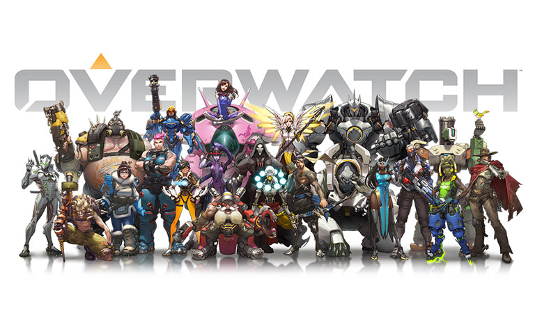
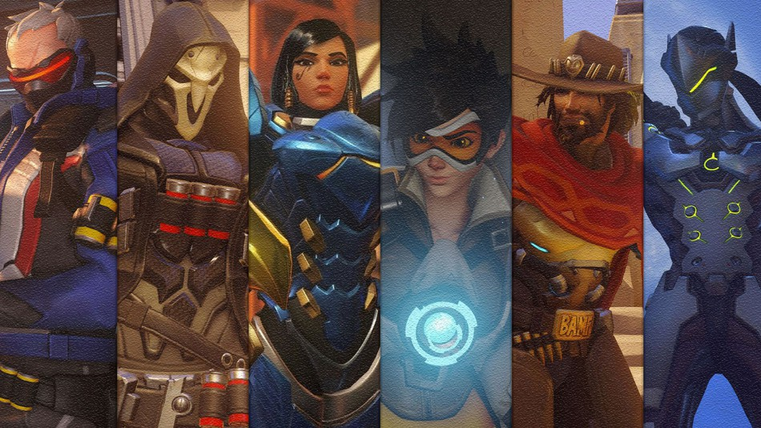
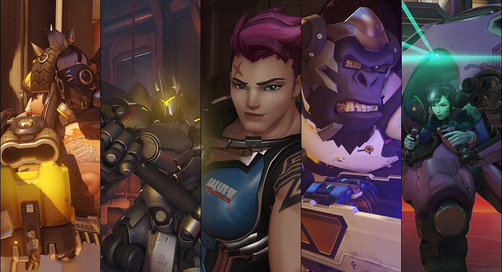
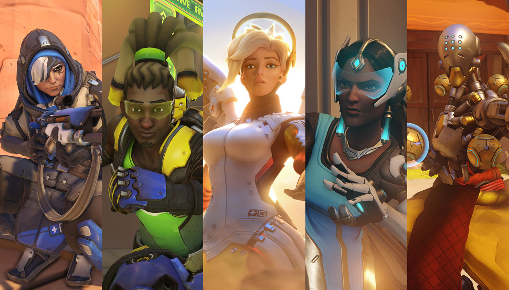
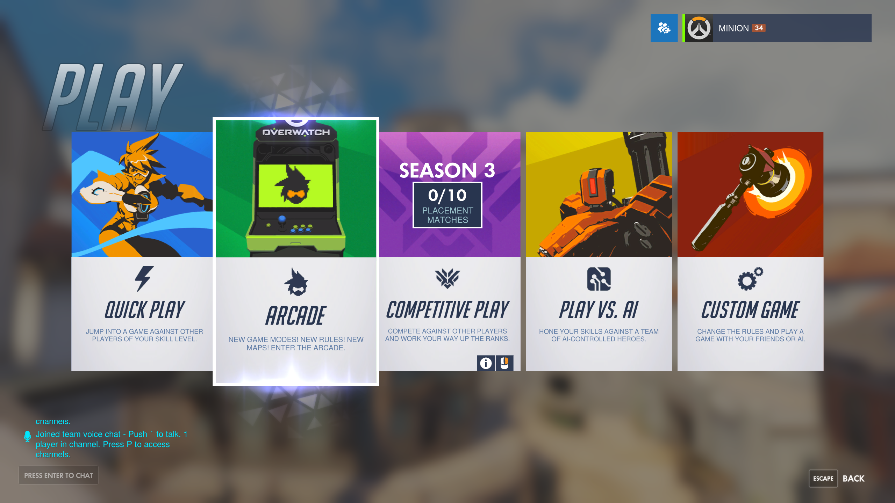
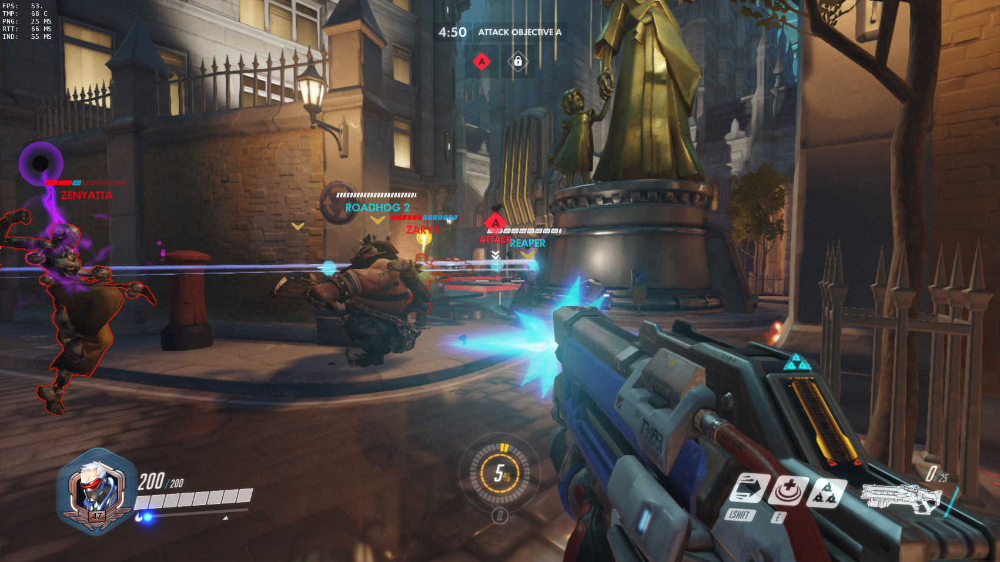
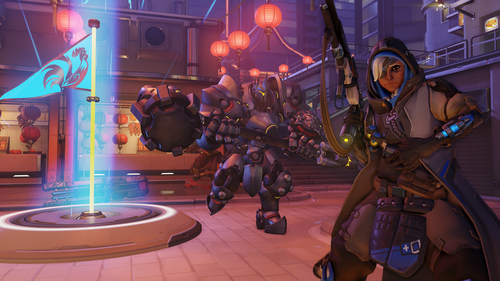

Overwatch: First-Shooter Game
Overwatch is a team-based multiplayer first-person shooter video game. It was developed and published by Blizzard Entertainment, which was released in May, 2016. There are many characters, which are called heroes, to choose from; and each of them are unique in appearance and have their own set of unique abilities. This allows players to find a hero that fits their play style.
Roles
There are three main roles in the game: DPS (stands for damage per second), tanks and healers.
DPS
DPS are the damage dealers, and their main targets are the opposite team’s DPS and healers. The DPS objectives are to take them down in team fights and to survive as long as possible by staying behind your tanks while getting healed by the healers. The latter objective is critical because a team without damage dealers does not produce enough damage to win team fights.
Tanks
Most of the tanks have shields to protect themselves and their team and other unique damage dealing abilities. These tanks are called the main tanks. The other type of tanks is the off-tank. These do not have a shield, but they generally have health generation and can absorb heavy damage. Their damage output is also higher than main tanks. The objective of the tanks is to protect their team from the opposite team.
Healers
Healers are classified as the support role. They support their team by healing them and using support abilities. Some of the support abilities are amplifying a team member’s damage, amplifying the enemy’s damage taken, creating a teleport machine, or increasing their team’s movement speed. The healers’ main objective is to keep everyone in their team alive.
Gameplay
The objective of the game depends on the game mode, but generally the offensive team needs to attack the defensive team and take over the control point.
Game Modes
There are 4 available game modes in competitive ranked or quick play which are Assault, Control, Escort, Hybrid; and 3 game modes are in Arcade which are Capture the Flag, Deathmatch and Elimination.
Assault
Assault, is a game mode in which the attacking team must take two capture points, while the defending team attempts to prevent them until the time runs out. When the first capture point is captured, the timer will increase and both teams spawning locations will move. Overtime will be triggered if the point is being contested by the attacking team, for as long they are on the point. Each Capture point is divided into three segments, representing a capture % checkpoint.
Control
Control, is a game mode in which two teams fight over a capture point in a best-of-three format. While a team is controlling a capture point, they will make progress toward 100% completion. Whichever team reaches 100% first wins the round. Overtime will be triggered if one team has reached 99% while the point is being contested by the other team, for as long as they are on the point. This game mode does not have a time limit, unlike others. All three rounds are located in the same location, with each round located in a different area of the map and featuring a new capture point.
Escort
Escort, is a game mode in which the attacking team must escort a payload to a delivery point, while the defending team attempts to prevent them until the time runs out. Each map has between 2-3 check points between the starting position and delivery point which when reached, will increase the timer and move both teams spawning locations. Overtime will be triggered if the payload is being contested by the attacking team, for as long they are near the payload.
Hybrid
Hybrid, is a game mode in which combines two types of other game modes. Currently, the only hybrid maps available are those that start with an Assault capture point and continue with an Escort objective. These sections behave exactly as their stand-alone game modes do.
Capture The Flag
Capture the Flag, is a game mode in which there is one flag on each side of the map, one for each team. The objective is to capture the enemy team's flag and bring it to your team's flag position, while preventing the enemy team of capturing your team's flag. The team that reaches 3 points first or has the most points when the 5-minute timer runs out wins the match.
Deathmatch
Deathmatch is a game mode in which eight players compete in a free-for-all with the only objective being to eliminate each other. The player who reaches 20 points first or has the highest score when the 10-minute timer runs out will be awarded first place. Win credit is awarded to the top four players of each match. Some of the hybrid and escort maps are modified for play in Deathmatch. Heroes can be chosen with no hero limit applying.
Elimination
Elimination, is a game mode in which players fight either alone (1v1) or in teams of three (3v3) or six (6v6) against another group of the same size in a first-to-three format (except in the 1v1 variation which is first-to-five). Once killed, a player cannot re-spawn in that round. The first team to kill all opposing team members wins that round. Heroes played during a winning round cannot be used again.
For more information please visit the official Overwatch website.